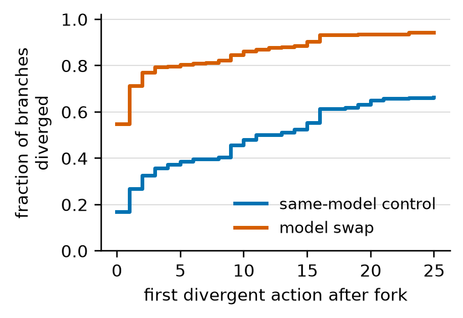

Efficient Reasoning Workshop @ COLM 2026
The Replay Gap Static evaluation of model switching in LLM agents scores the wrong world
Every LLM-routing benchmark scores routers by replaying pre-collected model outputs. Inside a multi-step agent that is unsound: swap the model at step k and everything after it changes. This work forks live agent trajectories to measure what replay hides.
The problem
Routing is now infrastructure — pick a cheap model for easy work, an expensive one for hard work. Increasingly that choice is made per step inside an agent.
But routers are evaluated the way single-turn routers are: collect each model's logged output once, then score a router by looking up the outputs it would have chosen. For a standalone question that is sound, because the question doesn't depend on the router's choice. For an agent it isn't. The action at step k determines the observation at step k+1 — the trajectory is a closed loop through the environment. Replay silently assumes an open loop.
Everyone assumes some error here. Nobody had measured it, because ground truth requires actually forking the trajectory and rolling each candidate forward in its own environment.
Branching rollouts
Run a base trajectory to completion. Fork it at a chosen step: start a fresh container, re-execute the recorded prefix actions, seed the message history so the incoming model sees exactly what the base model saw, then continue live with a different model. Every fork is paired with a same-model control fork, which absorbs sampling noise, batching nondeterminism, and environment-replay drift — so divergence caused by the swap is read relative to that floor.
Six seed-matched run pairs on SWE-bench Verified: ~900 containerized rollouts, 717 scored branch pairs, two swap directions, two fork depths, three difficulty/prompt tiers.
What we found
- 74–77%
of early swaps diverge at the very first post-fork action — against 6–35% for matched controls.
- 3%
of replayed post-fork states remain valid after an early swap. A replay evaluator scores the other 97% against a world that never happens.
- 5 / 0
outcome flips in swap arms versus zero across 359 same-model control forks.
- 0-for-5
success-relevant calls by a log-stitching replay evaluator — strictly worse than a constant-failure predictor.
- 99.99%
return-code agreement when rebuilding pre-fork environments (11,702 replayed actions), so the divergence isn't reconstruction error.

| Direction | control @early | swap @early | control @late | swap @late |
|---|---|---|---|---|
| up (4B base → 14B) | 0.674 | 0.941 | 0.489 | 0.752 |
| down (14B base → 4B) | 0.232 | 0.895 | 0.158 | 0.611 |

Two findings beyond routing
Temperature-0 “determinism” is a serving-stack property. Under identical decoding settings, our AWQ-served controls reproduced their base trajectories near-exactly while FP8-served controls diverged on 90–96% of forks. Any evaluation that assumes deterministic replay inherits this.
A thoroughness tax. Under a tight step budget the stronger model more often exhausted its budget without submitting (24/30 vs 17/30) — it explores and verifies more. Routing up can reduce completion rate, which per-step routers optimizing quality-per-step will mis-price.
Code & data
The branching harness, all experiment configs, and every analysis script that produced the numbers above are on GitHub. The full branched-trajectory dataset — ~900 rollouts with per-step actions, observations, fork metadata, replay-fidelity logs, token counts, patches, and SWE-bench outcomes — is on HuggingFace.
git clone https://github.com/AshrithaG/replay-gap
cd replay-gap && pip install -r requirements.txt
python scripts/smoke_test.py # validates the branching machinery, no GPU needed
# the trajectories
from datasets import load_dataset
ds = load_dataset("ashritha0907/replay-gap-trajectories", data_files="pilot30.jsonl.gz")It is a deliberately controlled pilot: one scaffold, one benchmark family, two quantized models, n=30 instances per run pair, and a 24GB serving budget that keeps absolute resolution rates low. The action-level results don't depend on task success; the outcome-level evidence rests on five events and is reported as such.
Citation
@inproceedings{gonuguntla2026replaygap,
title = {The Replay Gap: Static Evaluation of Model Switching
in {LLM} Agents Scores the Wrong World},
author = {Gonuguntla, Ashritha},
booktitle = {Efficient Reasoning Workshop at COLM},
year = {2026},
url = {https://openreview.net/forum?id=8gqqiNrzyA}
}